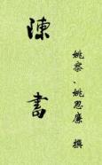

| 历史史籍 > |
| 陈书 |
| 作者：姚察、姚思廉、魏征 |
|
《陈书》纪传体断代史，帝纪6卷，列传30卷，共36卷。姚察、姚思廉编撰，成书于贞观十年（636年）。记载了自陈武帝陈霸先即位至后主陈叔宝被隋文帝灭国首尾三十三年间的史事。 《陈书》的史料来源除陈朝的国史和姚氏父子所编旧稿外，还有陈《永定起居注》八卷，《天嘉起居注》二十三卷，《天康光大起居注》十卷，《太建起居注》五十六卷，《至德起居注》四卷等历史材料和他人撰写的史书。 （2020-5-3，第三次整理） |
 |
| 原目录 |
| 一、本纪 |
| 1-2.高祖陈霸先 (2) (3) (4) (5) (6) (7) (8) |
| 3.世祖陈蒨 (2) (3) (4) |
| 4.废帝陈伯宗 |
| 5.宣帝陈顼 (2) (3) |
| 6.后主陈叔宝 (2) |
| ·陈本纪魏征总论 |
| 二、列传 |
| 01.后妃传序 |
| ·高祖宣皇后章要儿 世祖皇后沈妙容 废帝王皇后 |
| ·高宗皇后柳敬言 后主皇后沈婺华 后主贵妃张丽华 |
| 02.杜僧明 周文育 周宝安 侯安都 |
| 03.侯瑱 欧阳頠 吴明彻 裴子烈 侯欧吴传论 |
| 04.周铁虎 程灵洗 程文季 |
| 05.黄法氍 淳于量 章昭达 |
| 06.胡颖 徐度 徐敬成 杜棱 沈恪 |
| 07.徐世谱 鲁悉达 周敷 荀朗 周炅 |
| 08.衡阳献王陈昌 南康愍王陈昙朗 陈方泰 陈方庆 |
| 09.陈拟 陈详 陈慧纪 |
| 10.赵知礼 蔡景历 刘师知 谢岐 赵蔡刘传论 |
| 11.王冲 王通 王劢 袁敬 袁枢 沈众 |
| 12.袁泌 刘仲威 陆山才 王质 韦载 韦翙 |
| 13.沈炯 虞荔 虞寄 马枢 |
| 14.到仲举 韩子高 华皎 |
| 15.谢哲 萧乾 谢嘏 张种 王固 孔奂 萧允 萧引 |
| 16.陆子隆 钱道戢 骆牙 |
| 17.沈君理 王玚 陆缮 |
| 18.周弘正 周弘直 周确 袁宪 |
| 19.裴忌 孙玚 |
| 20.徐陵 徐俭 徐份 徐仪 徐孝克 |
| 21.江总 姚察 |
| 22.世祖九王 高宗二十九王 后主十一子 |
| 23.宗元饶 司马申 毛喜 蔡徵 |
| 24.萧济 陆琼陆从典 顾野王 傅縡 章华 |
| 25.萧摩诃 任忠 樊毅 樊猛 鲁广达 |
| 26.孝行传序 殷不害 谢贞 司马暠 张昭 |
| 27.儒林传序 |
| ·沈文阿 沈洙 戚衮 郑灼 张崖 陆诩 沈德威 |
| ·贺德基 全缓 张讥 顾越 沈不害 王元规 |
| 28.文学传序 |
| ·杜之伟 颜晃 江德藻 庾持 许亨 |
| ·褚玠 岑之敬 陆琰 陆瑜 陆玠 陆琛 |
| ·何之元 徐伯阳 张正见 蔡凝 阮卓 |
| 29.熊昙朗 周迪 留异 陈宝应 |
| 30.始兴王陈叔陵 新安王陈伯固 |
| 附录：曾巩《陈书目录序》 |